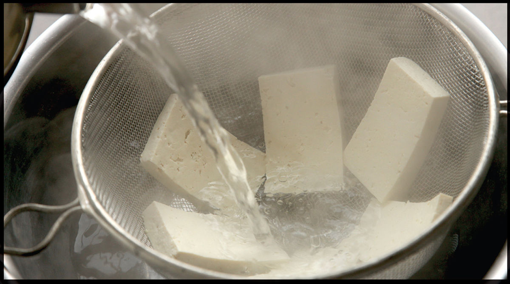
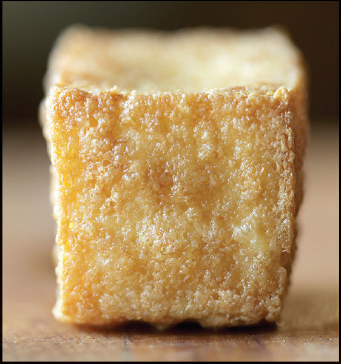

How to Make Tofu Worth Eating

I happen to be of the mind that even plain soft tofu with a little drizzle of soy sauce is excellent, but if you, or someone you love, needs some convincing that tofu can be texture-packed and delicious, then a bit of extra crispness and browning through panfrying or deep frying is a good direction to go.
There are three basic techniques when it comes to frying tofu, and for each technique a particular type of tofu is best.
•Panfried tofu is tofu that is cooked in a thin layer of oil until crispy and well browned. For panfried tofu, you’ll need firm or extra-firm cotton-style tofu.
•Deep-fried or puffy tofu is tofu that is deep-fried with no coating. As it fries, the exterior forms an airtight barrier that traps in moisture, causing it to puff up as it cooks. Deep-fried tofu can be served on its own with a dipping sauce or incorporated into stir-fried dishes. For deep-fried tofu, I prefer firm or extra-firm silken-style tofu or a soft cotton-style tofu to emphasize the textural contrast between crisp exterior and tender interior.
•Coated and fried tofu is tofu that’s coated in a starchy dredge or batter. This can be served as is with a dipping sauce or stir-fried with a sauce. For this technique, firm or extra-firm cotton-style tofu is best (with the exception of Agedashi Tofu, here, which is made with silken tofu).
TOFU VARIETIES
There is a huge range of tofu and related products throughout Asia, but for our purposes we’ll talk about the two major forms: silken and cottony. All tofu is made by adding a coagulant to soy milk, which causes its proteins to bind together, producing a jelled matrix of tangled proteins in a process similar to how milk is coagulated to form cheese. Silken tofu and cottony tofu are made using two different coagulating agents, slightly different processes, and have different culinary uses. Within these two categories you’ll find varying degrees of firmness from custardy soft to very firm and meaty, depending on their final water content. Some brands of tofu in the West conflate “soft” with “silken,” but the two are orthogonal measures (that is, it is possible to have soft cottony tofu just as it’s possible to have firm silken tofu).
Silken tofu, known as kinugoshi-dofu in Japan, yeon-dubu in Korea, and huah doufu or shigao doufu in China, is made by adding a gypsum (calcium sulfate) solution to soy milk. The gypsum causes soy proteins to coagulate into a stable matrix that is left untouched. Typically, silken tofu is coagulated directly in its packaging (which is why it conforms to the shape of its plastic container or cardboard Tetra Pak), and because it is uncut and undrained, it has a very high moisture content and a smooth texture that shears rather than crumbles.
As silken tofu is undrained, its moisture content is similar whether firm or soft. (Its firmness is related to the amount of coagulant added.) Because of this, even the firmest silken tofu will be relatively tender compared to cottony-style tofus labeled “soft.”
Silken tofu is frequently enjoyed cold and simply dressed (as in Japanese hiyayakko, here), or cooked in soups and stews. I like to use firm or extra-firm silken tofu for dishes like Mapo Tofu (here); while not the traditional choice, it’s the closest you can find to the style of soft tofu typically used.
Cottony or pressed tofu, known as momendofu in Japan, mo-dubu in Korea, and laodoufu in China, is made by adding magnesium chloride or calcium chloride (nigari in Japan or lushui in China) to soy milk. This creates a spongy, fine-textured curd that, like milk proteins during cheese making, will precipitate, leaving water behind. The unstrained curd is known as sundubu in Korea or sold as “extra-soft” in the West. To make firmer styles of cottony tofu, the curds are strained, packed in cloth-lined molds, and pressed to remove excess moisture. Depending on how much moisture is expressed, you get different firmnesses.
Cottony tofu will have the impression of the cloth mold on its surface. It has a more crumbly texture than silken tofu. Cottony tofu can stand up to more vigorous cooking techniques, like panfrying, deep frying, or stir-frying.
HOW TO PANFRY TOFU
Crispness comes from the dehydration of the exterior layer of proteins in your tofu slices, while browning occurs when those proteins and carbohydrates are exposed to temperatures above around 300°F or so, precipitating the Maillard reaction. The key to great panfried tofu is drying it. The drier you get your tofu to begin with, the more efficiently those crisping and browning reactions will take place and the better the contrast between crisp exterior and moist, tender interior will be.
Note that when I say to dry your tofu, that’s a fundamentally different thing than pressing moisture out of your tofu. Pressing moisture out of your tofu by placing it between layers of towels and weighting it down will squeeze moisture out of its interior in a process that’s similar to how tofu was treated before it went in the package to begin with. Doing this will turn medium tofu into firm tofu, firm tofu into extra-firm, and so on. There’s not a very compelling reason to do this, unless you happen to have only tofu that’s softer than what the recipe calls for.
No, when I say to dry your tofu, I’m talking about the surface of the tofu. Tofu comes packed in water, so when it comes out of that package, it’s wet. Your goal is to get the surface nice and dry while still leaving the interior moist. You can do this by very gently pressing your tofu with paper towels or by microwaving it briefly, but I find that the most reliable method is to do what Andrea Nguyen, author of Asian Tofu, suggests: pour hot salted water over it.
It may seem counterintuitive to add water to something you’re trying to dry out, but boiling water will actually cause the tofu to squeeze out more moisture, bringing it to the surface and making it easier to blot off, while the salt gently seasons the slices. Hot water also evaporates much faster than the cold water on refrigerated tofu.
No matter which method you choose—pressing the tofu between towels or pouring salted boiling water on top and then blotting—your tofu should be dry to the touch before you panfry it. Have you ever stuck out your tongue and left it out for few minutes to see how dry it can get? That’s what your tofu should feel like.
Once the tofu is nice and dry, it can go straight into a well-oiled wok or skillet over moderate heat until deep brown and crispy on both sides, using a thin metal spatula to flip the slices as they crisp. Taking your time is key: the more gently you brown the slices, the more evenly and deeper brown you can get them without burning them.
